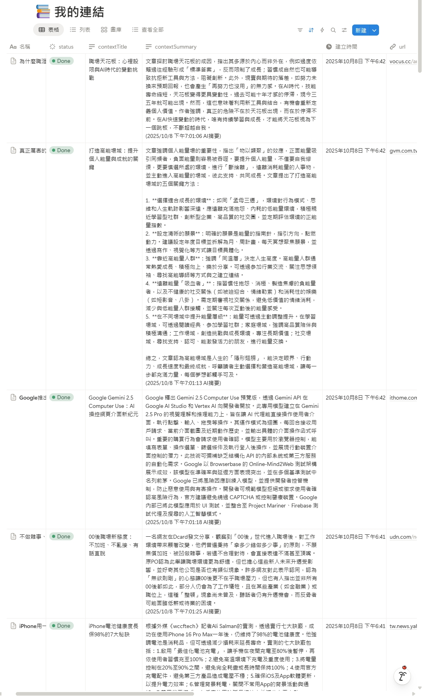

你的知識庫是資產，還是數位雜物間？
我如何打造一個AI閱讀助理，自動消化堆積如山的未讀文章，將「稍後閱讀」變為「即時洞察」，把數位雜物間改造成真正的第二大腦。
The Challenge: 數位收藏家的焦慮
我們都一樣：看到好文章就用 Notion Web Clipper 收藏起來，心想「總有一天會讀」。但現實是，知識庫越積越多，變成一個充滿未讀紅點、難以檢索的數位雜物間，帶來了無形的壓力。
資訊過載
收藏的文章遠超過能消化的速度，有價值的資訊被埋沒，無法轉化為真正的知識。
檢索困難
僅靠原始標題和連結，難以快速找到需要的資料，知識庫無法發揮應有的價值。
知識斷鏈
「收藏」和「學習」之間出現巨大鴻溝，知識沒有被內化，只是從一個地方搬到另一個地方。
The Solution: 知識煉金術士 AI
我打造了一個「知識煉金術士」自動化流程。它能將未經處理的原始資訊（文章），提煉成高價值的黃金（摘要與洞察），並自動整理歸檔。
自動化煉金流程
從定時檢查新文章、送入 AI 進行深度閱讀、提煉摘要與標題，到最後將成品回填至 Notion，全程自動化。

煉金成果：結構化的知識資產
原本雜亂的資料庫，現在每一篇文章都擁有了由 AI 生成的統一標題和精準摘要，變得清晰、可管理。
煉金咒語：與 AI 的溝通的藝術
成功的關鍵在於給予 AI 清晰、結構化的指令 (Prompt)，引導它穩定地輸出我們想要的結果，這是人機協作的核心。

The Impact: 將時間花在思考，而非閱讀
這個系統不僅僅是整理工具，它從根本上改變了我與資訊互動的方式。
學習效率 x10
10x
過去花 10 分鐘閱讀一篇文章，現在只需 1 分鐘閱讀摘要，即可掌握核心，決定是否深入研究。
知識資產化
100%
所有收藏的文章都被轉化為結構化、可搜尋的知識資產，讓「第二大腦」真正可用。
心態轉變
-99%
消除了「資訊焦慮」，讓我能更專注於思考與創造，而非被動地整理與消化。
核心做法：一個自律的資訊處理流
整個流程的核心，是一個自律的循環。它透過 n8n 實現，串連了 Notion 與 Google Gemini AI。
- 定時觸發 (Schedule Trigger): 每小時自動啟動，透過 Notion API 查詢是否有新的、尚未處理的文章（篩選條件為「摘要」欄位為空）。
- 讀取與組合: 抓取到新文章後，讀取其所有文字區塊 (Blocks) 並組合成一篇完整的純文字文章。
- AI 摘要與標題生成: 將組合後的全文發送給 Gemini AI，並透過精準的 Prompt 指令，要求 AI 扮演專業編輯，生成摘要與標題，並以標準的 JSON 格式回傳。
- 清理與回寫: 為了確保穩定性，一個 Code 節點會先解析並清理 AI 的回傳值，只取出純淨的 JSON 內容。
- 完成閉環: 最後，工作流將乾淨的標題和摘要，透過 Notion API 更新回對應的欄位，並將處理狀態改為「Done」。